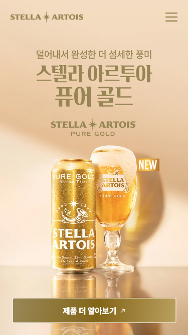
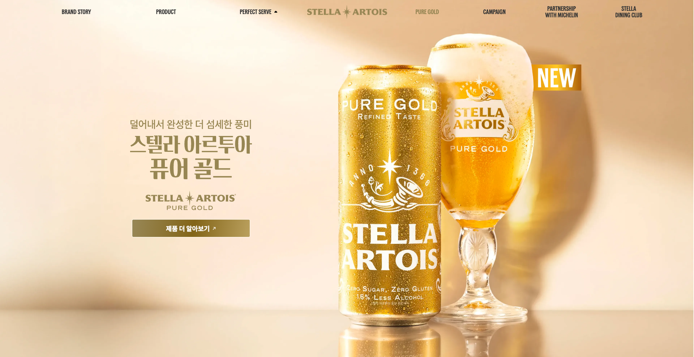
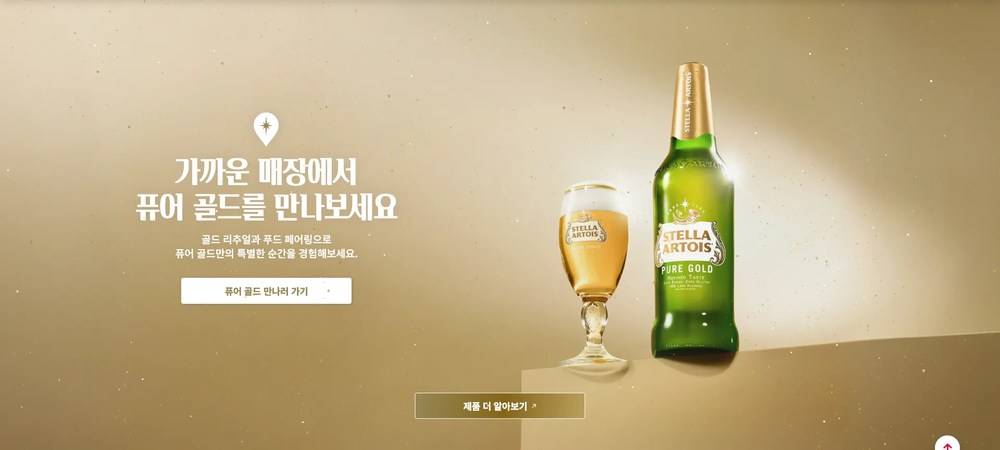
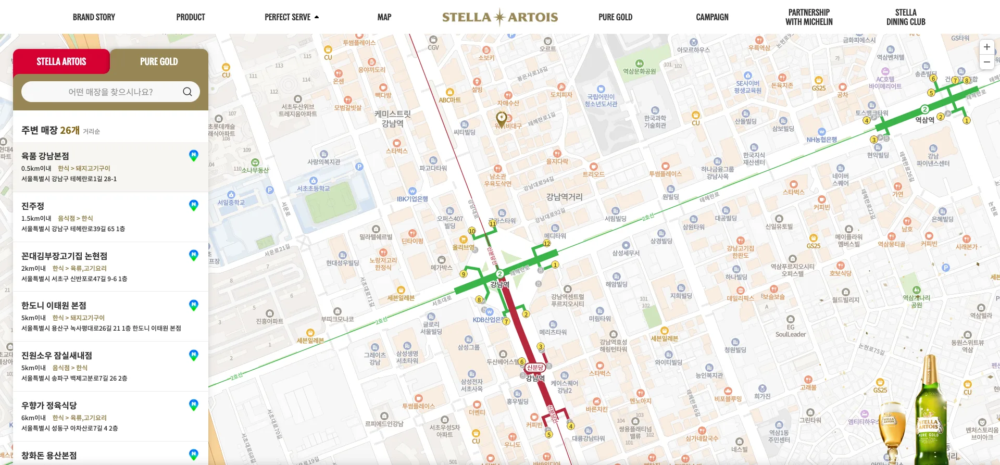
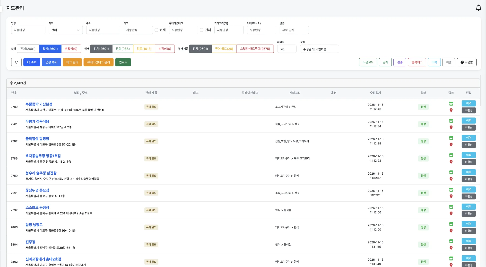
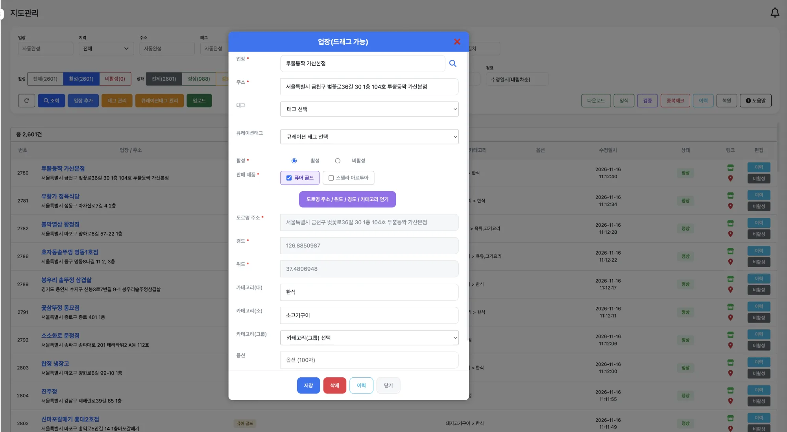
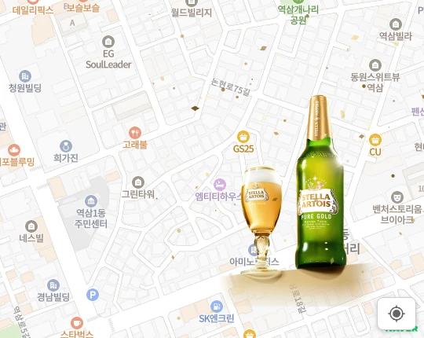
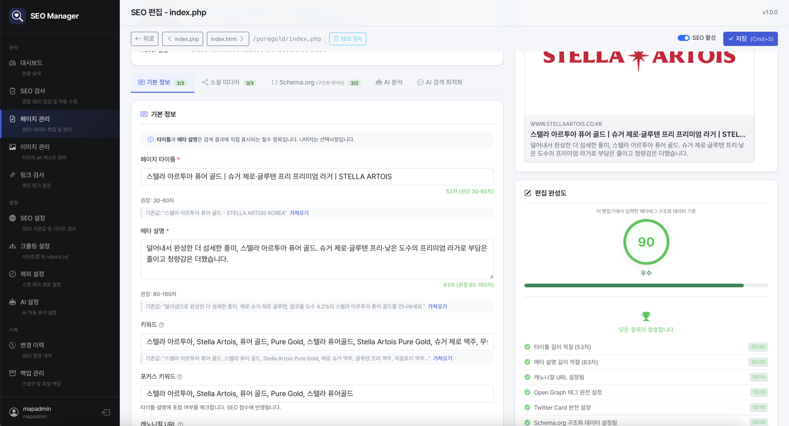
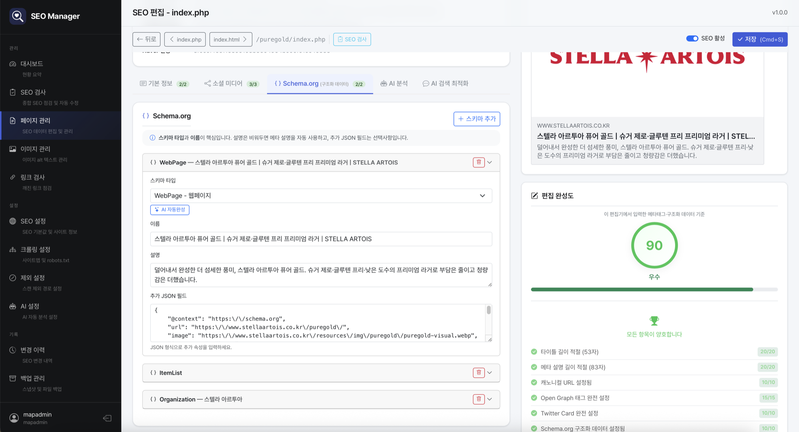

오픈
2026년 9월 ~ 2026년 10월
UI/UX 퍼블리셔
스텔라 아르투아 퓨어 골드 페이지
스텔라 아르투아 퓨어 골드 출시에 맞춰 운영 중인 스텔라 아르투아 홈페이지에 Pure Gold 메뉴를 추가하고, 신제품 소개 페이지를 신규 제작하였습니다. 매장 안내 구간에는 Figma에서 만든 금가루 효과의 코드를 가져와 적용하고, 퓨어 골드 출시에 맞춰 매장 찾기 지도의 매장 데이터를 스텔라 아르투아 · 퓨어 골드 판매 제품별로 나누고 관리자페이지에서 업장을 관리할 수 있도록 분리 · 추가하였습니다.
- 프로젝트 유형
- 운영 사이트 내 페이지 추가
- 계기
- 퓨어 골드 신제품 출시
- 핵심 구현
- 금가루 효과 적용 (Figma 코드)
- 지도 · 관리자
- 판매 제품별 매장 분리 · 업장 관리
기술
HTML5
CSS3
JavaScript
Canvas
PHP
GSAP
ScrollTrigger
Lenis
JSON-LD
JSON 애니메이션
작업 도구
Claude
01
프로젝트 개요
- 과제
- 퓨어 골드 출시에 맞춰 운영 중인 스텔라 아르투아 홈페이지에 메뉴와 신제품 소개 페이지를 추가하고, 매장 찾기 지도에서 퓨어 골드 판매 매장을 따로 보여줘야 했습니다.
- 목표
- 기존 사이트 구조를 유지하면서 신제품의 특징이 잘 전달되는 페이지를 만들고, 검색엔진이 제품 정보를 이해할 수 있도록 구성하는 것
- 작업 범위
- Pure Gold 메뉴 추가, 신제품 소개 페이지 반응형 퍼블리싱, 금가루 효과 적용(Figma에서 가져온 코드), 매장 데이터 판매 제품별 분리 · 관리자 업장 관리 추가, 구조화 데이터 · 메타 정보 작성
- 적용 기술
- HTML5 · CSS3 · JavaScript · Canvas · PHP · GSAP · ScrollTrigger · Lenis · JSON-LD
- 향후 개선
- BreadcrumbList · FAQPage 구조화 데이터 추가
02
주요 화면

03
담당 업무
-
Pure Gold 메뉴 추가
기존 홈페이지 헤더 메뉴 구성 안에 Pure Gold 메뉴를 추가하여 신제품 페이지로 연결하였습니다.
-
신제품 소개 페이지 제작
비주얼 → 매장 안내 → 제품 소개 → 구매 안내로 이어지는 페이지를 신규 퍼블리싱하였습니다.
-
금가루 효과 적용
Figma에서 만든 금가루 효과의 코드를 가져와, 매장 안내 구간 배경에 맞게 넣어 적용하였습니다. 지도의 퓨어 골드 탭 금가루는 Figma 애니메이션 데이터를 JSON으로 담아 적용하였습니다.
-
구조화 데이터 · 메타 정보
WebPage(제품 정보 Product · Brand 포함) · ItemList · Organization 구조화 데이터(JSON-LD)와 메타 · Open Graph · canonical을 작성했습니다.
-
매장 지도 판매 제품 분리 · 관리자 업장 관리
퓨어 골드 출시에 맞춰 매장 데이터를 스텔라 아르투아 · 퓨어 골드 판매 제품별로 나누고, 관리자페이지 지도관리에 판매 제품 항목과 필터를 분리 · 추가해 업장별로 관리할 수 있도록 하였습니다.
04
금가루 효과 적용
"가까운 매장에서 퓨어 골드를 만나보세요" 매장 안내 구간 배경에 금가루가 흩날리는 효과를 넣었습니다. 효과는 직접 만든 것이 아니라 Figma에서 만든 효과의 코드를 가져와 사용했으며, 페이지 구간에 맞게 넣어 적용하였습니다. 가져온 코드는 Canvas 2D로 입자를 그리는 방식으로, 아래와 같이 동작합니다.

-
입자 구성
금색 팔레트 두 종류(기본 · 밝은 금색)를 섞고, 일부 입자는 줄기처럼 모이도록 배치되어 자연스럽게 흩날립니다.
-
움직임 · 반짝임
입자마다 떨어지는 속도, 좌우 흔들림, 깜빡임 주기가 다르고, 일부는 흰빛으로 번쩍이거나 마름모 조각으로 그려집니다.
-
성능
화면 면적에 비례해 입자 수를 정하고(최대 20,000개), 기기 픽셀 비율은 2배까지만 반영합니다. 영역이 화면에 보일 때만 그리도록 IntersectionObserver로 멈추고 다시 시작합니다.
-
반응형 · 접근성
ResizeObserver로 영역 크기가 바뀌면 다시 그리고, 모션 축소 설정 사용자에게는 효과를 실행하지 않습니다.
금가루 입자 생성 · 그리기 JavaScript Figma에서 가져와 적용한 코드 일부 발췌 — 화면 면적 기준 입자 수, 보일 때만 그리기, 모션 축소 대응
var canvas = document.querySelector('.pg-meet__dust');
if (window.matchMedia('(prefers-reduced-motion: reduce)').matches) return;
var BASE = [[198,160,54],[186,150,46],[212,175,66],[170,138,48],[205,168,72]];
var BRIGHT = [[255,205,40],[246,190,20],[255,216,82],[235,182,30]];
var DENSITY = 1100;
function build() {
// 화면 면적에 비례해 입자 수를 정한다 (최대 20,000개)
var n = Math.min(20000, Math.round(w * h / DENSITY));
for (var j = 0; j < n; j++) {
parts.push({
y: Math.random() * h,
vy: Math.random() * 0.035 + 0.02, // 떨어지는 속도
swayAmp: Math.random() * 6 + 2, // 좌우 흔들림
twSpeed: Math.random() * 0.04 + 0.01, // 깜빡임 주기
flip: Math.random() < 0.22 // 흰빛 반짝임
/* ... */
});
}
}
function frame(now) {
var dt = Math.min(now - last, 50);
ctx.clearRect(0, 0, w, h);
for (var i = 0; i < parts.length; i++) {
var p = parts[i];
p.y += p.vy * dt;
if (p.y > h + 10) { p.y = -10; p.x = Math.random() * w; } // 아래로 나가면 위에서 다시
/* ... 반짝임 계산 후 fillRect / 마름모 그리기 */
}
raf = requestAnimationFrame(frame);
}
// 영역이 화면에 보일 때만 그린다
new ResizeObserver(resize).observe(canvas);
new IntersectionObserver(function (entries) {
entries[0].isIntersecting ? start() : stop();
}, { threshold: 0 }).observe(canvas);
05
매장 지도 · 관리자 업장 관리
퓨어 골드가 새로 출시되면서 매장 찾기 지도의 매장 데이터를 판매 제품별로 나눴습니다. 지도에서는 STELLA ARTOIS · PURE GOLD 탭으로 판매 매장을 따로 보여주고, 관리자페이지 지도관리에서는 업장마다 판매 제품을 지정하고 제품별로 걸러 볼 수 있도록 분리 · 추가하였습니다.



퓨어 골드 탭 금가루 — Figma 애니메이션을 JSON으로 적용
지도에서 PURE GOLD 탭을 선택하면 오른쪽 아래(모바일은 탭 위 왼쪽)에 병 · 잔 이미지와 금가루 애니메이션이 나타납니다. Figma 프로토타입 '금가루 + 이미지 애니메이션'의 Gold Dust 레이어 알갱이 440개의 위치 · 크기 · 색 · 회전과 이동 · 회전 · 투명도 키프레임, 이징 값을 JSON 파일(map_gold_dust.json)에 그대로 담고, 이를 Canvas에 그려 Figma 애니메이션과 같은 움직임을 재생하도록 적용하였습니다.

-
Figma 데이터 → JSON
Figma 화면(1920×934) 기준 알갱이 440개와 키프레임 · 이징을 JSON으로 담아, 한 바퀴 3.9초 애니메이션을 퓨어 골드 탭인 동안 반복합니다.
-
화면 크기 대응
Figma 기준 위치를 캔버스 크기에 맞춰 줄이고, PC는 110개 · 모바일은 50개만 골라 그립니다. 병 · 잔 이미지 등장은 Figma 키프레임대로 CSS 애니메이션으로 적용했고, 지도 클릭은 막지 않도록 했습니다.
금가루 애니메이션 데이터 구조 JSON map_gold_dust.json — Figma 화면 크기 · 재생 시간 · 이징 · 알갱이 440개(위치 · 크기 · 색 · 키프레임)
{
"w": 1920, "h": 934, // Figma 화면 기준 크기
"dur": 3.9, // 한 바퀴 재생 시간(초)
"ease": ["linear", ...], // 키프레임 이징 5종
"p": [ // 알갱이 440개
["o", 599.3, -225.4, 1.5, 1.5, 1.352, "c9993f", // 모양 · x · y · 크기 · 회전 · 색
[[0, 0.094, 0.391, 0.689, 1], [0, 0, -13.1, -25.33, -25.33], [0, 1, 1, 0]], // 키프레임: 시점 · 값 · 이징
...
],
...
]
}
06
검색 최적화 (SEO)
퓨어 골드 페이지의 타이틀 · 메타 설명 · 키워드 · canonical과 구조화 데이터를 SEO Manager에서 입력하고 관리했습니다.


07
모바일 화면
모바일 화면에서도 같은 구성으로 볼 수 있도록 반응형으로 퍼블리싱하였습니다.